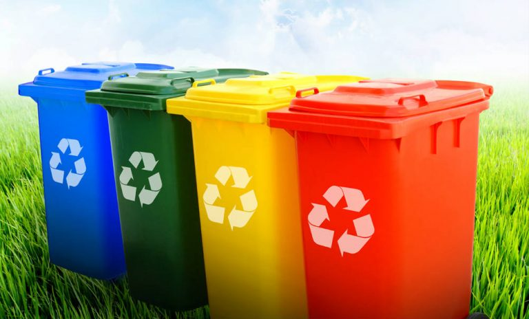

Recycling in University
Selective collection consists of a differentiated collection of types of waste with similar characteristics. The waste generator separates the waste according to its constitution or composition and makes it available to be collected separately. This separation makes recycling easier and more economically viable since each type of waste has its own particular recycling process.
A selective collection project is the best way to dispose of waste appropriately in an organization. Besides, it is a way to increase its revenues rather than just bear the costs resulting from the correct waste disposal. The implementation of a selective collection project involves the development of three stages: planning, implementation and maintenance.
Selective Collection of Waste
Paper should be put in the proper place for paper, and the same goes for plastic, glass, metal, organic waste, etc. Learn which types of waste are best to recycle.
Text written and image by Vgresiduos